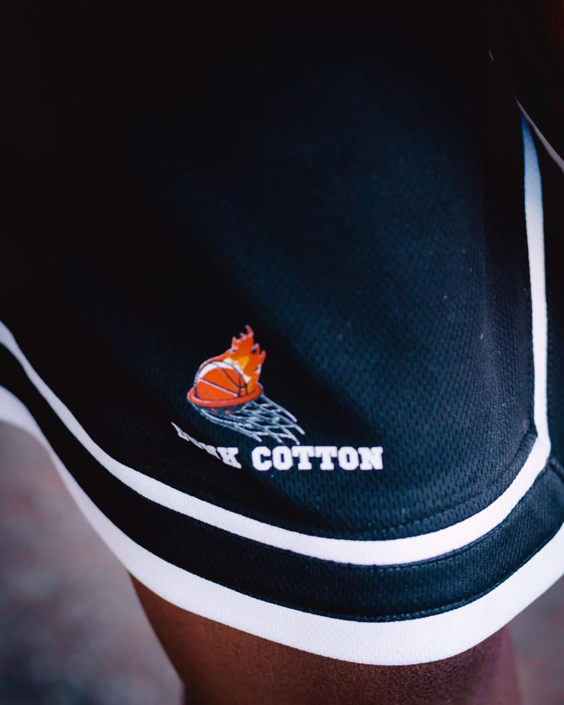
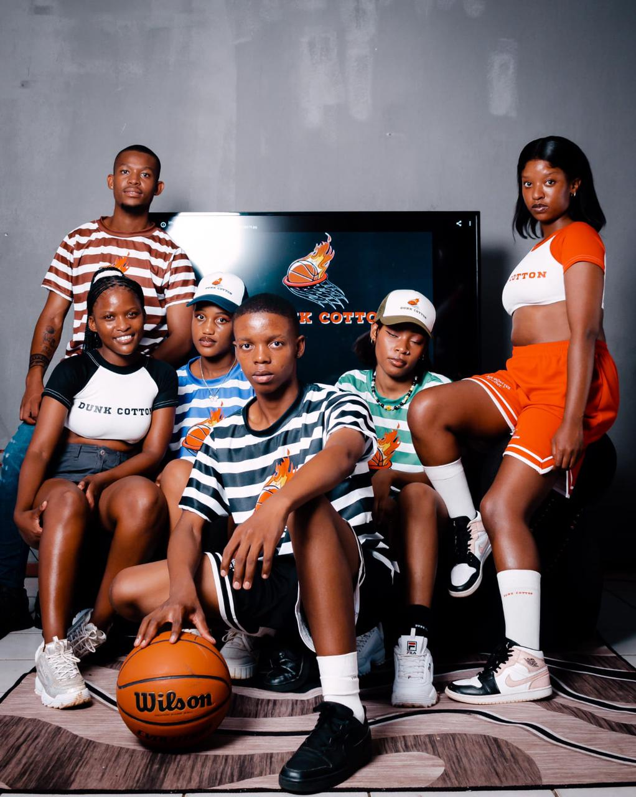
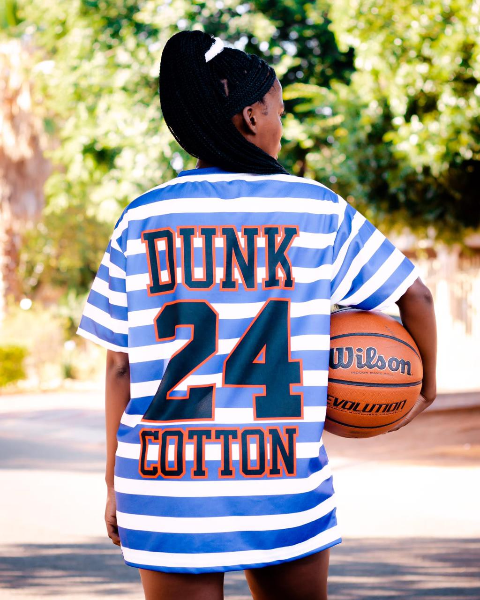
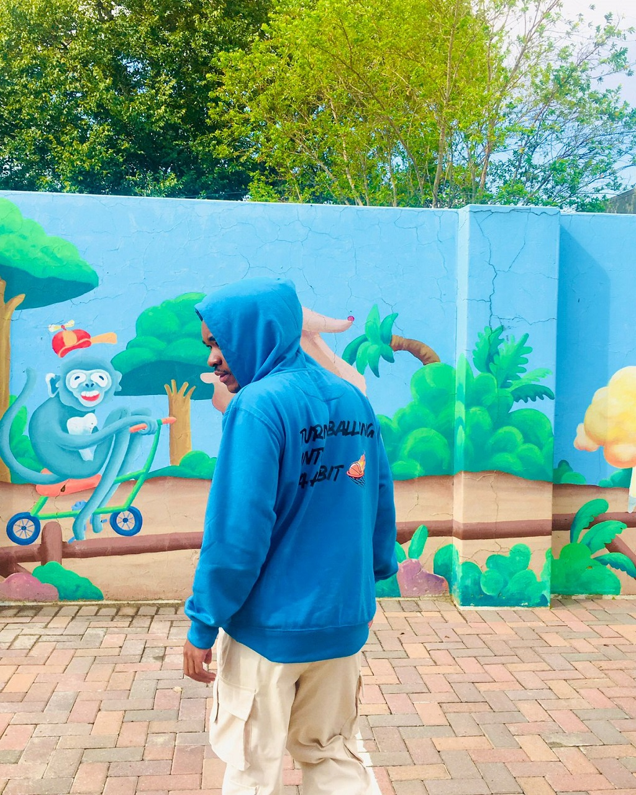
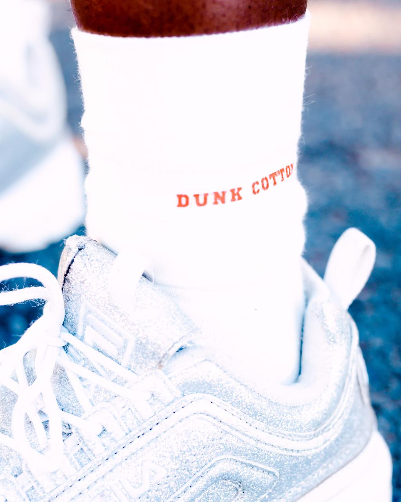

Discover the story behind our passion for premium cotton apparel
Dunk Cotton was born from a simple idea: to create clothing that combines comfort, style, and sustainability. We believe that great fashion starts with the finest materials, and our 100% cotton fabrics are sourced from the best suppliers around the world.
Our journey began with a small team of designers and artisans who shared a vision of redefining casual wear. Today, we're proud to offer a collection that caters to every style, from streetwear to everyday essentials.


Behind Dunk Cotton is a dedicated team of fashion enthusiasts, designers, and quality experts. We're passionate about creating pieces that not only look great but feel amazing to wear.
From our creative directors to our production specialists, every member of our team brings unique expertise and a commitment to excellence.
We never compromise on the quality of our materials and craftsmanship.
We're committed to eco-friendly practices and sustainable sourcing.
Timeless designs that blend comfort with contemporary fashion.


